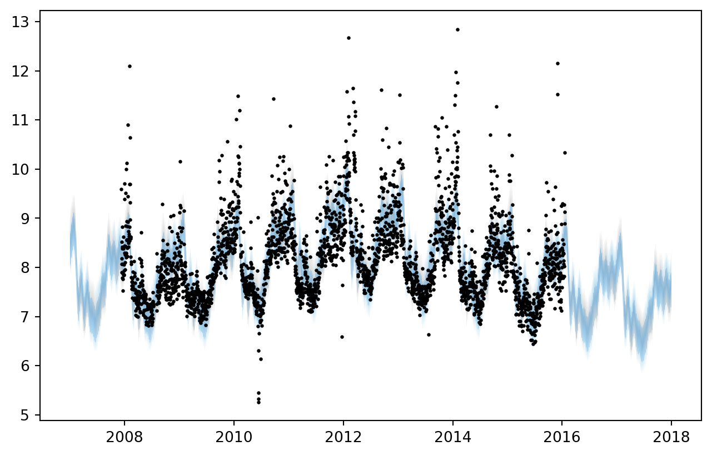

import warnings
warnings.simplefilter(action="ignore")Basic Univariate Forecasting with Prophetverse
A tutorial demonstrating how to use Prophetverse via the sktime interface for univariate time series forecasting, including MAP and MCMC inference, quantile prediction, and decomposition.
This example shows how to use Prophetverse to perform univariate forecasting with a time series dataset, using sktime-style interface.
Because of this compatibility, you can benefit from all the features of sktime, such as hierarchical reconciliation, ensemble models, pipelines, etc. There are two main methods to use Prophetverse with sktime:
fit(y, X=None): This method is used to fit the model. It takes as input a time seriesyand an optional exogenous variableX. Theytime series must be apd.Seriesor apd.DataFrame. TheXvariable must be apd.DataFrameorNone.predict(fh, X=None): This method is used to make predictions. It takes as input a forecast horizonfhand an optional exogenous variableX. Thefhforecast horizon can be a relative or an absolute forecast horizon. TheXvariable must be apd.DataFrameorNone, according to theXvariable used in thefitmethod.
Later in this example, we will also show additional methods to make predictions, such as predict_quantiles and predict_components.
import matplotlib.pyplot as plt
import numpy as np
import pandas as pd
from numpyro import distributions as dist
import numpyro
numpyro.enable_x64() # To avoid computational issuesImport dataset
We import a dataset from Prophet’s original repository. We then put it into sktime-friendly format, where the index is a pd.PeriodIndex and the colums are the time series.
from prophetverse.datasets.loaders import load_peyton_manning
y = load_peyton_manning()
display(y.head())| y | |
|---|---|
| ds | |
| 2007-12-10 | 9.590761 |
| 2007-12-11 | 8.519590 |
| 2007-12-12 | 8.183677 |
| 2007-12-13 | 8.072467 |
| 2007-12-14 | 7.893572 |
The full dataset looks like this:
y.plot.line(figsize=(8, 6))
plt.show()
Fit model
Here, we will show how you can fit a simple model with Prophetverse. We first fit a model without seasonal components, and then fit a full model. We also show how easy it is to switch between Maximum A Posteriori (MAP) inference and Markov Chain Monte Carlo (MCMC).
No seasonality
from prophetverse.effects.trend import PiecewiseLinearTrend
from prophetverse.engine import MAPInferenceEngine
from prophetverse.sktime import Prophetverse
from prophetverse.utils import no_input_columns
model = Prophetverse(
trend=PiecewiseLinearTrend(
changepoint_interval=500,
changepoint_prior_scale=0.00001,
changepoint_range=-250,
),
inference_engine=MAPInferenceEngine(),
)
model.fit(y=y)Prophetverse(inference_engine=MAPInferenceEngine(),
trend=PiecewiseLinearTrend(changepoint_interval=500,
changepoint_prior_scale=1e-05,
changepoint_range=-250))Please rerun this cell to show the HTML repr or trust the notebook.Prophetverse(inference_engine=MAPInferenceEngine(),
trend=PiecewiseLinearTrend(changepoint_interval=500,
changepoint_prior_scale=1e-05,
changepoint_range=-250))PiecewiseLinearTrend(changepoint_interval=500, changepoint_prior_scale=1e-05,
changepoint_range=-250)MAPInferenceEngine()
forecast_horizon = pd.period_range("2007-01-01", "2018-01-01", freq="D")
fig, ax = plt.subplots(figsize=(8, 5))
preds = model.predict(fh=forecast_horizon)
preds.plot.line(ax=ax)
ax.scatter(y.index, y, marker="o", color="k", s=2, alpha=0.5)
With seasonality
Here, we fit the univariate Prophet and pass an exogenous effect as hyperparameter. The exogenous_effects parameter let us add new components to the model and control the relationship between exogenous variables and the target variable.
In this case, the LinearFourierSeasonality effect creates sinusoidal and cosine terms to model the seasonality of the time series, which are then multiplied by linear coefficients and added to the model.
This argument is a list of tuples of the form (effect_name, effect, regex_to_filter_relevant_columns), where effect_name is a string and effect is an instance of a subclass of prophetverse.effects.BaseEffect. The regex is used to filter the columns of X that are relevant for the effect, but can also be None (or its alias prophetverse.utils.no_input_columns) if no input in X is needed for the effect.
from prophetverse.effects.fourier import LinearFourierSeasonality
from prophetverse.utils import no_input_columns
model = Prophetverse(
trend=PiecewiseLinearTrend(
changepoint_interval=500,
changepoint_prior_scale=0.00001,
changepoint_range=-500,
),
exogenous_effects=[
(
"seasonality",
LinearFourierSeasonality(
freq="D",
sp_list=[7, 365.25],
fourier_terms_list=[3, 10],
prior_scale=0.1,
effect_mode="multiplicative",
),
no_input_columns,
),
],
inference_engine=MAPInferenceEngine(),
)
model.fit(y=y)Prophetverse(exogenous_effects=[('seasonality',
LinearFourierSeasonality(effect_mode='multiplicative',
fourier_terms_list=[3,
10],
freq='D',
prior_scale=0.1,
sp_list=[7, 365.25]),
'^$')],
inference_engine=MAPInferenceEngine(),
trend=PiecewiseLinearTrend(changepoint_interval=500,
changepoint_prior_scale=1e-05,
changepoint_range=-500))Please rerun this cell to show the HTML repr or trust the notebook.Prophetverse(exogenous_effects=[('seasonality',
LinearFourierSeasonality(effect_mode='multiplicative',
fourier_terms_list=[3,
10],
freq='D',
prior_scale=0.1,
sp_list=[7, 365.25]),
'^$')],
inference_engine=MAPInferenceEngine(),
trend=PiecewiseLinearTrend(changepoint_interval=500,
changepoint_prior_scale=1e-05,
changepoint_range=-500))PiecewiseLinearTrend(changepoint_interval=500, changepoint_prior_scale=1e-05,
changepoint_range=-500)LinearFourierSeasonality(effect_mode='multiplicative',
fourier_terms_list=[3, 10], freq='D', prior_scale=0.1,
sp_list=[7, 365.25])MAPInferenceEngine()
forecast_horizon = pd.period_range("2007-01-01", "2018-01-01", freq="D")
fig, ax = plt.subplots(figsize=(8, 5))
preds = model.predict(fh=forecast_horizon)
preds.plot.line(ax=ax)
ax.scatter(y.index, y, marker="o", color="k", s=2, alpha=0.5)Probabilistic forecasting
We can also make probabilistic forecasts with Prophetverse, in sktime fashion. The predict_quantiles method returns the quantiles of the predictive distribution in a pd.DataFrame
quantiles = model.predict_quantiles(fh=forecast_horizon, alpha=[0.1, 0.9])
quantiles.head()| y | ||
|---|---|---|
| 0.1 | 0.9 | |
| 2007-01-01 | 8.047412 | 9.356146 |
| 2007-01-02 | 7.836059 | 9.125930 |
| 2007-01-03 | 7.785226 | 9.044309 |
| 2007-01-04 | 7.715282 | 9.009478 |
| 2007-01-05 | 7.754124 | 9.043622 |
The plot below shows the (0.1, 0.9) quantiles of the predictive distribution
fig, ax = plt.subplots(figsize=(8, 5))
# Plot area between quantiles
ax.fill_between(
quantiles.index.to_timestamp(),
quantiles.iloc[:, 0],
quantiles.iloc[:, -1],
alpha=0.5,
)
ax.scatter(y.index, y, marker="o", color="k", s=2, alpha=1)
Timeseries decomposition
We can easily extract the components of the time series with the predict_components method. This method, in particular, is not implemented in sktime’s BaseForecaster, but it is a method of prophetverse.Prophetverse class.
sites = model.predict_components(fh=forecast_horizon)
sites.head()| mean | obs | seasonality | trend | |
|---|---|---|---|---|
| 2007-01-01 | 8.716897 | 8.707676 | 0.916926 | 7.799971 |
| 2007-01-02 | 8.520570 | 8.500814 | 0.720600 | 7.799971 |
| 2007-01-03 | 8.366813 | 8.392820 | 0.566843 | 7.799971 |
| 2007-01-04 | 8.387161 | 8.369109 | 0.587191 | 7.799971 |
| 2007-01-05 | 8.415625 | 8.393918 | 0.615654 | 7.799971 |
for column in sites.columns:
fig, ax = plt.subplots(figsize=(8, 2))
ax.plot(sites.index.to_timestamp(), sites[column], label=column)
ax.set_title(column)
fig.show()

Fitting with MCMC
In the previous examples, we used MAP inference to fit the model. However, we can also use Markov Chain Monte Carlo (MCMC) to fit the model. To do this, we just need to change the inference_engine parameter to MCMCInferenceEngine. The rest of the code remains the same.
The set_params method is used to set the parameters of the model, in sklearn fashion.
from prophetverse.engine import MCMCInferenceEngine
model.set_params(inference_engine=MCMCInferenceEngine(num_warmup=1000))
model.fit(y=y)Prophetverse(exogenous_effects=[('seasonality',
LinearFourierSeasonality(effect_mode='multiplicative',
fourier_terms_list=[3,
10],
freq='D',
prior_scale=0.1,
sp_list=[7, 365.25]),
'^$')],
inference_engine=MCMCInferenceEngine(num_warmup=1000),
trend=PiecewiseLinearTrend(changepoint_interval=500,
changepoint_prior_scale=1e-05,
changepoint_range=-500))Please rerun this cell to show the HTML repr or trust the notebook.Prophetverse(exogenous_effects=[('seasonality',
LinearFourierSeasonality(effect_mode='multiplicative',
fourier_terms_list=[3,
10],
freq='D',
prior_scale=0.1,
sp_list=[7, 365.25]),
'^$')],
inference_engine=MCMCInferenceEngine(num_warmup=1000),
trend=PiecewiseLinearTrend(changepoint_interval=500,
changepoint_prior_scale=1e-05,
changepoint_range=-500))PiecewiseLinearTrend(changepoint_interval=500, changepoint_prior_scale=1e-05,
changepoint_range=-500)LinearFourierSeasonality(effect_mode='multiplicative',
fourier_terms_list=[3, 10], freq='D', prior_scale=0.1,
sp_list=[7, 365.25])MCMCInferenceEngine(num_warmup=1000)
quantiles = model.predict_quantiles(fh=forecast_horizon, alpha=[0.75, 0.25])
fig, ax = plt.subplots(figsize=(8, 5))
# Plot area between quantiles
ax.fill_between(
quantiles.index.to_timestamp(),
quantiles.iloc[:, 0],
quantiles.iloc[:, -1],
alpha=0.5,
)
ax.scatter(y.index, y, marker="o", color="k", s=2, alpha=1)
One interesting feature of MCMC is that it allows us to obtain samples from the posterior distribution of the parameters. In other words, we can also obtain probabilistic forecasts for the TS components.
samples = model.predict_component_samples(fh=forecast_horizon)
samples| mean | obs | seasonality | trend | ||
|---|---|---|---|---|---|
| sample | |||||
| 0 | 2007-01-01 | 8.766647 | 8.993755 | 0.911963 | 7.854683 |
| 2007-01-02 | 8.603121 | 8.961214 | 0.748438 | 7.854683 | |
| 2007-01-03 | 8.367542 | 7.589113 | 0.512859 | 7.854683 | |
| 2007-01-04 | 8.440357 | 9.144632 | 0.585673 | 7.854683 | |
| 2007-01-05 | 8.514072 | 8.527602 | 0.659388 | 7.854683 | |
| ... | ... | ... | ... | ... | ... |
| 999 | 2017-12-28 | 7.408649 | 6.519647 | 0.346344 | 7.062305 |
| 2017-12-29 | 7.396831 | 6.769823 | 0.335339 | 7.061492 | |
| 2017-12-30 | 7.247843 | 7.795866 | 0.187163 | 7.060679 | |
| 2017-12-31 | 7.603085 | 7.073530 | 0.543218 | 7.059867 | |
| 2018-01-01 | 7.883352 | 8.442698 | 0.824297 | 7.059054 |
4019000 rows × 4 columns
Fitting with Variational Inference
Another inference method available in Prophetverse is Variational Inference (VI). This method is generally faster than MCMC and can be used for larger datasets, while still providing probabilistic samples for the parameters.
To use VI, we just need to change the inference_engine parameter to VIInferenceEngine. The rest of the code remains the same.
Tip
Choose carefully the number of steps and the optimizer. The default optimizer might not work well for all use-cases
from prophetverse.engine import VIInferenceEngine
from prophetverse import LBFGSSolver, CosineScheduleAdamOptimizer
optimizer = CosineScheduleAdamOptimizer()
model.set_params(
inference_engine=VIInferenceEngine(
progress_bar=True, num_steps=100_000, optimizer=optimizer
)
)
model.fit(y=y) 0%| | 0/100000 [00:00<?, ?it/s] 0%| | 1/100000 [00:00<21:18:15, 1.30it/s] 0%| | 384/100000 [00:00<02:45, 602.46it/s] 1%| | 800/100000 [00:00<01:19, 1253.90it/s] 1%| | 1166/100000 [00:01<00:56, 1752.63it/s] 2%|▏ | 1586/100000 [00:01<00:42, 2311.48it/s] 2%|▏ | 1989/100000 [00:01<00:35, 2734.21it/s] 2%|▏ | 2402/100000 [00:01<00:31, 3095.63it/s] 3%|▎ | 2791/100000 [00:01<00:29, 3290.79it/s] 3%|▎ | 3178/100000 [00:01<00:28, 3425.42it/s] 4%|▎ | 3582/100000 [00:01<00:26, 3597.17it/s] 4%|▍ | 3997/100000 [00:01<00:25, 3756.01it/s] 4%|▍ | 4395/100000 [00:01<00:25, 3761.82it/s] 5%|▍ | 4802/100000 [00:01<00:24, 3849.64it/s] 5%|▌ | 5198/100000 [00:02<00:24, 3832.54it/s, init loss: 22917835223.3965, avg. loss [1-5000]: 8902531163.0927] 6%|▌ | 5615/100000 [00:02<00:24, 3931.21it/s, init loss: 22917835223.3965, avg. loss [1-5000]: 8902531163.0927] 6%|▌ | 6028/100000 [00:02<00:23, 3988.30it/s, init loss: 22917835223.3965, avg. loss [1-5000]: 8902531163.0927] 6%|▋ | 6454/100000 [00:02<00:22, 4068.07it/s, init loss: 22917835223.3965, avg. loss [1-5000]: 8902531163.0927] 7%|▋ | 6864/100000 [00:02<00:23, 3991.50it/s, init loss: 22917835223.3965, avg. loss [1-5000]: 8902531163.0927] 7%|▋ | 7270/100000 [00:02<00:23, 4009.02it/s, init loss: 22917835223.3965, avg. loss [1-5000]: 8902531163.0927] 8%|▊ | 7689/100000 [00:02<00:22, 4060.84it/s, init loss: 22917835223.3965, avg. loss [1-5000]: 8902531163.0927] 8%|▊ | 8097/100000 [00:02<00:22, 4036.55it/s, init loss: 22917835223.3965, avg. loss [1-5000]: 8902531163.0927] 9%|▊ | 8502/100000 [00:02<00:23, 3948.55it/s, init loss: 22917835223.3965, avg. loss [1-5000]: 8902531163.0927] 9%|▉ | 8923/100000 [00:03<00:22, 4021.75it/s, init loss: 22917835223.3965, avg. loss [1-5000]: 8902531163.0927] 9%|▉ | 9327/100000 [00:03<00:22, 3983.83it/s, init loss: 22917835223.3965, avg. loss [1-5000]: 8902531163.0927] 10%|▉ | 9730/100000 [00:03<00:22, 3996.15it/s, init loss: 22917835223.3965, avg. loss [1-5000]: 8902531163.0927] 10%|█ | 10131/100000 [00:03<00:22, 3926.16it/s, init loss: 22917835223.3965, avg. loss [5001-10000]: 365463518.6272] 11%|█ | 10525/100000 [00:03<00:23, 3864.11it/s, init loss: 22917835223.3965, avg. loss [5001-10000]: 365463518.6272] 11%|█ | 10912/100000 [00:03<00:23, 3831.37it/s, init loss: 22917835223.3965, avg. loss [5001-10000]: 365463518.6272] 11%|█▏ | 11326/100000 [00:03<00:22, 3921.25it/s, init loss: 22917835223.3965, avg. loss [5001-10000]: 365463518.6272] 12%|█▏ | 11719/100000 [00:03<00:22, 3905.11it/s, init loss: 22917835223.3965, avg. loss [5001-10000]: 365463518.6272] 12%|█▏ | 12110/100000 [00:03<00:22, 3827.28it/s, init loss: 22917835223.3965, avg. loss [5001-10000]: 365463518.6272] 13%|█▎ | 12502/100000 [00:03<00:22, 3851.80it/s, init loss: 22917835223.3965, avg. loss [5001-10000]: 365463518.6272] 13%|█▎ | 12888/100000 [00:04<00:22, 3811.91it/s, init loss: 22917835223.3965, avg. loss [5001-10000]: 365463518.6272] 13%|█▎ | 13279/100000 [00:04<00:22, 3840.68it/s, init loss: 22917835223.3965, avg. loss [5001-10000]: 365463518.6272] 14%|█▎ | 13708/100000 [00:04<00:21, 3970.88it/s, init loss: 22917835223.3965, avg. loss [5001-10000]: 365463518.6272] 14%|█▍ | 14140/100000 [00:04<00:21, 4072.16it/s, init loss: 22917835223.3965, avg. loss [5001-10000]: 365463518.6272] 15%|█▍ | 14548/100000 [00:04<00:21, 3984.82it/s, init loss: 22917835223.3965, avg. loss [5001-10000]: 365463518.6272] 15%|█▍ | 14978/100000 [00:04<00:20, 4075.81it/s, init loss: 22917835223.3965, avg. loss [5001-10000]: 365463518.6272] 15%|█▌ | 15387/100000 [00:04<00:21, 3899.08it/s, init loss: 22917835223.3965, avg. loss [10001-15000]: 32986751.0654] 16%|█▌ | 15804/100000 [00:04<00:21, 3975.84it/s, init loss: 22917835223.3965, avg. loss [10001-15000]: 32986751.0654] 16%|█▌ | 16204/100000 [00:04<00:21, 3869.92it/s, init loss: 22917835223.3965, avg. loss [10001-15000]: 32986751.0654] 17%|█▋ | 16593/100000 [00:04<00:21, 3870.72it/s, init loss: 22917835223.3965, avg. loss [10001-15000]: 32986751.0654] 17%|█▋ | 16982/100000 [00:05<00:21, 3866.25it/s, init loss: 22917835223.3965, avg. loss [10001-15000]: 32986751.0654] 17%|█▋ | 17391/100000 [00:05<00:21, 3931.47it/s, init loss: 22917835223.3965, avg. loss [10001-15000]: 32986751.0654] 18%|█▊ | 17797/100000 [00:05<00:20, 3967.47it/s, init loss: 22917835223.3965, avg. loss [10001-15000]: 32986751.0654] 18%|█▊ | 18195/100000 [00:05<00:20, 3950.44it/s, init loss: 22917835223.3965, avg. loss [10001-15000]: 32986751.0654] 19%|█▊ | 18596/100000 [00:05<00:20, 3966.12it/s, init loss: 22917835223.3965, avg. loss [10001-15000]: 32986751.0654] 19%|█▉ | 19027/100000 [00:05<00:19, 4065.98it/s, init loss: 22917835223.3965, avg. loss [10001-15000]: 32986751.0654] 19%|█▉ | 19458/100000 [00:05<00:19, 4138.68it/s, init loss: 22917835223.3965, avg. loss [10001-15000]: 32986751.0654] 20%|█▉ | 19889/100000 [00:05<00:19, 4188.29it/s, init loss: 22917835223.3965, avg. loss [10001-15000]: 32986751.0654] 20%|██ | 20309/100000 [00:05<00:19, 4047.17it/s, init loss: 22917835223.3965, avg. loss [15001-20000]: 3276970.1186] 21%|██ | 20717/100000 [00:05<00:19, 4055.41it/s, init loss: 22917835223.3965, avg. loss [15001-20000]: 3276970.1186] 21%|██ | 21124/100000 [00:06<00:19, 4051.78it/s, init loss: 22917835223.3965, avg. loss [15001-20000]: 3276970.1186] 22%|██▏ | 21530/100000 [00:06<00:19, 3941.05it/s, init loss: 22917835223.3965, avg. loss [15001-20000]: 3276970.1186] 22%|██▏ | 21926/100000 [00:06<00:19, 3917.43it/s, init loss: 22917835223.3965, avg. loss [15001-20000]: 3276970.1186] 22%|██▏ | 22319/100000 [00:06<00:19, 3904.66it/s, init loss: 22917835223.3965, avg. loss [15001-20000]: 3276970.1186] 23%|██▎ | 22729/100000 [00:06<00:19, 3960.62it/s, init loss: 22917835223.3965, avg. loss [15001-20000]: 3276970.1186] 23%|██▎ | 23126/100000 [00:06<00:19, 3914.50it/s, init loss: 22917835223.3965, avg. loss [15001-20000]: 3276970.1186] 24%|██▎ | 23518/100000 [00:06<00:19, 3862.64it/s, init loss: 22917835223.3965, avg. loss [15001-20000]: 3276970.1186] 24%|██▍ | 23921/100000 [00:06<00:19, 3909.06it/s, init loss: 22917835223.3965, avg. loss [15001-20000]: 3276970.1186] 24%|██▍ | 24313/100000 [00:06<00:19, 3854.16it/s, init loss: 22917835223.3965, avg. loss [15001-20000]: 3276970.1186] 25%|██▍ | 24741/100000 [00:07<00:18, 3978.14it/s, init loss: 22917835223.3965, avg. loss [15001-20000]: 3276970.1186] 25%|██▌ | 25150/100000 [00:07<00:18, 4010.52it/s, init loss: 22917835223.3965, avg. loss [20001-25000]: 338664.2764] 26%|██▌ | 25574/100000 [00:07<00:18, 4078.40it/s, init loss: 22917835223.3965, avg. loss [20001-25000]: 338664.2764] 26%|██▌ | 25983/100000 [00:07<00:18, 4060.15it/s, init loss: 22917835223.3965, avg. loss [20001-25000]: 338664.2764] 26%|██▋ | 26403/100000 [00:07<00:17, 4098.70it/s, init loss: 22917835223.3965, avg. loss [20001-25000]: 338664.2764] 27%|██▋ | 26814/100000 [00:07<00:18, 4028.64it/s, init loss: 22917835223.3965, avg. loss [20001-25000]: 338664.2764] 27%|██▋ | 27218/100000 [00:07<00:18, 3999.48it/s, init loss: 22917835223.3965, avg. loss [20001-25000]: 338664.2764] 28%|██▊ | 27645/100000 [00:07<00:17, 4076.91it/s, init loss: 22917835223.3965, avg. loss [20001-25000]: 338664.2764] 28%|██▊ | 28061/100000 [00:07<00:17, 4098.35it/s, init loss: 22917835223.3965, avg. loss [20001-25000]: 338664.2764] 28%|██▊ | 28472/100000 [00:07<00:17, 4005.69it/s, init loss: 22917835223.3965, avg. loss [20001-25000]: 338664.2764] 29%|██▉ | 28883/100000 [00:08<00:17, 4036.02it/s, init loss: 22917835223.3965, avg. loss [20001-25000]: 338664.2764] 29%|██▉ | 29290/100000 [00:08<00:17, 4043.73it/s, init loss: 22917835223.3965, avg. loss [20001-25000]: 338664.2764] 30%|██▉ | 29705/100000 [00:08<00:17, 4071.89it/s, init loss: 22917835223.3965, avg. loss [20001-25000]: 338664.2764] 30%|███ | 30117/100000 [00:08<00:17, 4085.73it/s, init loss: 22917835223.3965, avg. loss [25001-30000]: 47149.1611] 31%|███ | 30526/100000 [00:08<00:17, 3998.25it/s, init loss: 22917835223.3965, avg. loss [25001-30000]: 47149.1611] 31%|███ | 30943/100000 [00:08<00:17, 4048.02it/s, init loss: 22917835223.3965, avg. loss [25001-30000]: 47149.1611] 31%|███▏ | 31363/100000 [00:08<00:16, 4092.56it/s, init loss: 22917835223.3965, avg. loss [25001-30000]: 47149.1611] 32%|███▏ | 31773/100000 [00:08<00:17, 3957.26it/s, init loss: 22917835223.3965, avg. loss [25001-30000]: 47149.1611] 32%|███▏ | 32170/100000 [00:08<00:17, 3898.53it/s, init loss: 22917835223.3965, avg. loss [25001-30000]: 47149.1611] 33%|███▎ | 32587/100000 [00:08<00:16, 3974.99it/s, init loss: 22917835223.3965, avg. loss [25001-30000]: 47149.1611] 33%|███▎ | 33003/100000 [00:09<00:16, 4026.70it/s, init loss: 22917835223.3965, avg. loss [25001-30000]: 47149.1611] 33%|███▎ | 33407/100000 [00:09<00:17, 3917.17it/s, init loss: 22917835223.3965, avg. loss [25001-30000]: 47149.1611] 34%|███▍ | 33834/100000 [00:09<00:16, 4017.93it/s, init loss: 22917835223.3965, avg. loss [25001-30000]: 47149.1611] 34%|███▍ | 34237/100000 [00:09<00:16, 3958.54it/s, init loss: 22917835223.3965, avg. loss [25001-30000]: 47149.1611] 35%|███▍ | 34634/100000 [00:09<00:16, 3902.38it/s, init loss: 22917835223.3965, avg. loss [25001-30000]: 47149.1611] 35%|███▌ | 35025/100000 [00:09<00:17, 3791.43it/s, init loss: 22917835223.3965, avg. loss [30001-35000]: 16997.5104] 35%|███▌ | 35438/100000 [00:09<00:16, 3887.91it/s, init loss: 22917835223.3965, avg. loss [30001-35000]: 16997.5104] 36%|███▌ | 35857/100000 [00:09<00:16, 3973.65it/s, init loss: 22917835223.3965, avg. loss [30001-35000]: 16997.5104] 36%|███▋ | 36256/100000 [00:09<00:16, 3884.87it/s, init loss: 22917835223.3965, avg. loss [30001-35000]: 16997.5104] 37%|███▋ | 36646/100000 [00:09<00:16, 3887.86it/s, init loss: 22917835223.3965, avg. loss [30001-35000]: 16997.5104] 37%|███▋ | 37036/100000 [00:10<00:16, 3863.04it/s, init loss: 22917835223.3965, avg. loss [30001-35000]: 16997.5104] 37%|███▋ | 37425/100000 [00:10<00:16, 3869.08it/s, init loss: 22917835223.3965, avg. loss [30001-35000]: 16997.5104] 38%|███▊ | 37822/100000 [00:10<00:15, 3896.74it/s, init loss: 22917835223.3965, avg. loss [30001-35000]: 16997.5104] 38%|███▊ | 38252/100000 [00:10<00:15, 4015.98it/s, init loss: 22917835223.3965, avg. loss [30001-35000]: 16997.5104] 39%|███▊ | 38664/100000 [00:10<00:15, 4044.54it/s, init loss: 22917835223.3965, avg. loss [30001-35000]: 16997.5104] 39%|███▉ | 39069/100000 [00:10<00:15, 3967.50it/s, init loss: 22917835223.3965, avg. loss [30001-35000]: 16997.5104] 39%|███▉ | 39492/100000 [00:10<00:14, 4043.56it/s, init loss: 22917835223.3965, avg. loss [30001-35000]: 16997.5104] 40%|███▉ | 39897/100000 [00:10<00:15, 3980.48it/s, init loss: 22917835223.3965, avg. loss [30001-35000]: 16997.5104] 40%|████ | 40296/100000 [00:10<00:15, 3888.51it/s, init loss: 22917835223.3965, avg. loss [35001-40000]: 10272.4040] 41%|████ | 40686/100000 [00:11<00:15, 3830.06it/s, init loss: 22917835223.3965, avg. loss [35001-40000]: 10272.4040] 41%|████ | 41070/100000 [00:11<00:15, 3809.97it/s, init loss: 22917835223.3965, avg. loss [35001-40000]: 10272.4040] 41%|████▏ | 41480/100000 [00:11<00:15, 3892.65it/s, init loss: 22917835223.3965, avg. loss [35001-40000]: 10272.4040] 42%|████▏ | 41870/100000 [00:11<00:15, 3822.21it/s, init loss: 22917835223.3965, avg. loss [35001-40000]: 10272.4040] 42%|████▏ | 42303/100000 [00:11<00:14, 3969.66it/s, init loss: 22917835223.3965, avg. loss [35001-40000]: 10272.4040] 43%|████▎ | 42701/100000 [00:11<00:14, 3942.31it/s, init loss: 22917835223.3965, avg. loss [35001-40000]: 10272.4040] 43%|████▎ | 43128/100000 [00:11<00:14, 4035.70it/s, init loss: 22917835223.3965, avg. loss [35001-40000]: 10272.4040] 44%|████▎ | 43533/100000 [00:11<00:14, 3907.84it/s, init loss: 22917835223.3965, avg. loss [35001-40000]: 10272.4040] 44%|████▍ | 43952/100000 [00:11<00:14, 3988.20it/s, init loss: 22917835223.3965, avg. loss [35001-40000]: 10272.4040] 44%|████▍ | 44373/100000 [00:11<00:13, 4051.35it/s, init loss: 22917835223.3965, avg. loss [35001-40000]: 10272.4040] 45%|████▍ | 44789/100000 [00:12<00:13, 4079.61it/s, init loss: 22917835223.3965, avg. loss [35001-40000]: 10272.4040] 45%|████▌ | 45198/100000 [00:12<00:13, 3969.58it/s, init loss: 22917835223.3965, avg. loss [40001-45000]: 6127.6165] 46%|████▌ | 45596/100000 [00:12<00:13, 3940.58it/s, init loss: 22917835223.3965, avg. loss [40001-45000]: 6127.6165] 46%|████▌ | 46004/100000 [00:12<00:13, 3980.55it/s, init loss: 22917835223.3965, avg. loss [40001-45000]: 6127.6165] 46%|████▋ | 46416/100000 [00:12<00:13, 4021.51it/s, init loss: 22917835223.3965, avg. loss [40001-45000]: 6127.6165] 47%|████▋ | 46836/100000 [00:12<00:13, 4071.22it/s, init loss: 22917835223.3965, avg. loss [40001-45000]: 6127.6165] 47%|████▋ | 47250/100000 [00:12<00:12, 4089.61it/s, init loss: 22917835223.3965, avg. loss [40001-45000]: 6127.6165] 48%|████▊ | 47660/100000 [00:12<00:13, 3938.70it/s, init loss: 22917835223.3965, avg. loss [40001-45000]: 6127.6165] 48%|████▊ | 48056/100000 [00:12<00:13, 3931.27it/s, init loss: 22917835223.3965, avg. loss [40001-45000]: 6127.6165] 48%|████▊ | 48473/100000 [00:12<00:12, 3999.42it/s, init loss: 22917835223.3965, avg. loss [40001-45000]: 6127.6165] 49%|████▉ | 48895/100000 [00:13<00:12, 4062.66it/s, init loss: 22917835223.3965, avg. loss [40001-45000]: 6127.6165] 49%|████▉ | 49316/100000 [00:13<00:12, 4105.51it/s, init loss: 22917835223.3965, avg. loss [40001-45000]: 6127.6165] 50%|████▉ | 49728/100000 [00:13<00:12, 3983.74it/s, init loss: 22917835223.3965, avg. loss [40001-45000]: 6127.6165] 50%|█████ | 50128/100000 [00:13<00:12, 3915.69it/s, init loss: 22917835223.3965, avg. loss [45001-50000]: 3776.0849] 51%|█████ | 50533/100000 [00:13<00:12, 3952.89it/s, init loss: 22917835223.3965, avg. loss [45001-50000]: 3776.0849] 51%|█████ | 50930/100000 [00:13<00:12, 3934.81it/s, init loss: 22917835223.3965, avg. loss [45001-50000]: 3776.0849] 51%|█████▏ | 51324/100000 [00:13<00:12, 3851.78it/s, init loss: 22917835223.3965, avg. loss [45001-50000]: 3776.0849] 52%|█████▏ | 51737/100000 [00:13<00:12, 3932.59it/s, init loss: 22917835223.3965, avg. loss [45001-50000]: 3776.0849] 52%|█████▏ | 52131/100000 [00:13<00:12, 3912.66it/s, init loss: 22917835223.3965, avg. loss [45001-50000]: 3776.0849] 53%|█████▎ | 52532/100000 [00:14<00:12, 3941.16it/s, init loss: 22917835223.3965, avg. loss [45001-50000]: 3776.0849] 53%|█████▎ | 52936/100000 [00:14<00:11, 3970.33it/s, init loss: 22917835223.3965, avg. loss [45001-50000]: 3776.0849] 53%|█████▎ | 53351/100000 [00:14<00:11, 4020.38it/s, init loss: 22917835223.3965, avg. loss [45001-50000]: 3776.0849] 54%|█████▍ | 53754/100000 [00:14<00:11, 3969.02it/s, init loss: 22917835223.3965, avg. loss [45001-50000]: 3776.0849] 54%|█████▍ | 54174/100000 [00:14<00:11, 4035.04it/s, init loss: 22917835223.3965, avg. loss [45001-50000]: 3776.0849] 55%|█████▍ | 54578/100000 [00:14<00:11, 3920.52it/s, init loss: 22917835223.3965, avg. loss [45001-50000]: 3776.0849] 55%|█████▍ | 54971/100000 [00:14<00:11, 3841.23it/s, init loss: 22917835223.3965, avg. loss [45001-50000]: 3776.0849] 55%|█████▌ | 55356/100000 [00:14<00:11, 3840.58it/s, init loss: 22917835223.3965, avg. loss [50001-55000]: 2335.9004] 56%|█████▌ | 55741/100000 [00:14<00:11, 3822.16it/s, init loss: 22917835223.3965, avg. loss [50001-55000]: 2335.9004] 56%|█████▌ | 56153/100000 [00:14<00:11, 3908.58it/s, init loss: 22917835223.3965, avg. loss [50001-55000]: 2335.9004] 57%|█████▋ | 56567/100000 [00:15<00:10, 3975.07it/s, init loss: 22917835223.3965, avg. loss [50001-55000]: 2335.9004] 57%|█████▋ | 56965/100000 [00:15<00:11, 3879.87it/s, init loss: 22917835223.3965, avg. loss [50001-55000]: 2335.9004] 57%|█████▋ | 57354/100000 [00:15<00:11, 3847.79it/s, init loss: 22917835223.3965, avg. loss [50001-55000]: 2335.9004] 58%|█████▊ | 57740/100000 [00:15<00:11, 3834.29it/s, init loss: 22917835223.3965, avg. loss [50001-55000]: 2335.9004] 58%|█████▊ | 58155/100000 [00:15<00:10, 3924.95it/s, init loss: 22917835223.3965, avg. loss [50001-55000]: 2335.9004] 59%|█████▊ | 58548/100000 [00:15<00:10, 3897.70it/s, init loss: 22917835223.3965, avg. loss [50001-55000]: 2335.9004] 59%|█████▉ | 58939/100000 [00:15<00:10, 3844.67it/s, init loss: 22917835223.3965, avg. loss [50001-55000]: 2335.9004] 59%|█████▉ | 59324/100000 [00:15<00:10, 3801.31it/s, init loss: 22917835223.3965, avg. loss [50001-55000]: 2335.9004] 60%|█████▉ | 59739/100000 [00:15<00:10, 3900.80it/s, init loss: 22917835223.3965, avg. loss [50001-55000]: 2335.9004] 60%|██████ | 60130/100000 [00:15<00:10, 3882.67it/s, init loss: 22917835223.3965, avg. loss [55001-60000]: 1136.8837] 61%|██████ | 60542/100000 [00:16<00:09, 3952.58it/s, init loss: 22917835223.3965, avg. loss [55001-60000]: 1136.8837] 61%|██████ | 60938/100000 [00:16<00:10, 3854.36it/s, init loss: 22917835223.3965, avg. loss [55001-60000]: 1136.8837] 61%|██████▏ | 61348/100000 [00:16<00:09, 3924.28it/s, init loss: 22917835223.3965, avg. loss [55001-60000]: 1136.8837] 62%|██████▏ | 61747/100000 [00:16<00:09, 3941.69it/s, init loss: 22917835223.3965, avg. loss [55001-60000]: 1136.8837] 62%|██████▏ | 62164/100000 [00:16<00:09, 4009.14it/s, init loss: 22917835223.3965, avg. loss [55001-60000]: 1136.8837] 63%|██████▎ | 62566/100000 [00:16<00:09, 3914.93it/s, init loss: 22917835223.3965, avg. loss [55001-60000]: 1136.8837] 63%|██████▎ | 62966/100000 [00:16<00:09, 3938.07it/s, init loss: 22917835223.3965, avg. loss [55001-60000]: 1136.8837] 63%|██████▎ | 63395/100000 [00:16<00:09, 4039.23it/s, init loss: 22917835223.3965, avg. loss [55001-60000]: 1136.8837] 64%|██████▍ | 63800/100000 [00:16<00:09, 3977.36it/s, init loss: 22917835223.3965, avg. loss [55001-60000]: 1136.8837] 64%|██████▍ | 64199/100000 [00:16<00:09, 3969.40it/s, init loss: 22917835223.3965, avg. loss [55001-60000]: 1136.8837] 65%|██████▍ | 64597/100000 [00:17<00:09, 3865.64it/s, init loss: 22917835223.3965, avg. loss [55001-60000]: 1136.8837] 65%|██████▌ | 65002/100000 [00:17<00:08, 3918.26it/s, init loss: 22917835223.3965, avg. loss [60001-65000]: 158.2418] 65%|██████▌ | 65395/100000 [00:17<00:08, 3895.40it/s, init loss: 22917835223.3965, avg. loss [60001-65000]: 158.2418] 66%|██████▌ | 65821/100000 [00:17<00:08, 4000.38it/s, init loss: 22917835223.3965, avg. loss [60001-65000]: 158.2418] 66%|██████▌ | 66231/100000 [00:17<00:08, 4027.08it/s, init loss: 22917835223.3965, avg. loss [60001-65000]: 158.2418] 67%|██████▋ | 66635/100000 [00:17<00:08, 3992.11it/s, init loss: 22917835223.3965, avg. loss [60001-65000]: 158.2418] 67%|██████▋ | 67035/100000 [00:17<00:08, 3945.65it/s, init loss: 22917835223.3965, avg. loss [60001-65000]: 158.2418] 67%|██████▋ | 67430/100000 [00:17<00:08, 3799.35it/s, init loss: 22917835223.3965, avg. loss [60001-65000]: 158.2418] 68%|██████▊ | 67812/100000 [00:17<00:08, 3778.82it/s, init loss: 22917835223.3965, avg. loss [60001-65000]: 158.2418] 68%|██████▊ | 68241/100000 [00:18<00:08, 3925.08it/s, init loss: 22917835223.3965, avg. loss [60001-65000]: 158.2418] 69%|██████▊ | 68635/100000 [00:18<00:08, 3893.10it/s, init loss: 22917835223.3965, avg. loss [60001-65000]: 158.2418] 69%|██████▉ | 69044/100000 [00:18<00:07, 3948.58it/s, init loss: 22917835223.3965, avg. loss [60001-65000]: 158.2418] 69%|██████▉ | 69440/100000 [00:18<00:07, 3901.50it/s, init loss: 22917835223.3965, avg. loss [60001-65000]: 158.2418] 70%|██████▉ | 69866/100000 [00:18<00:07, 4004.54it/s, init loss: 22917835223.3965, avg. loss [60001-65000]: 158.2418] 70%|███████ | 70267/100000 [00:18<00:07, 3961.24it/s, init loss: 22917835223.3965, avg. loss [65001-70000]: -600.7649] 71%|███████ | 70664/100000 [00:18<00:07, 3913.78it/s, init loss: 22917835223.3965, avg. loss [65001-70000]: -600.7649] 71%|███████ | 71056/100000 [00:18<00:07, 3852.51it/s, init loss: 22917835223.3965, avg. loss [65001-70000]: -600.7649] 71%|███████▏ | 71442/100000 [00:18<00:07, 3796.18it/s, init loss: 22917835223.3965, avg. loss [65001-70000]: -600.7649] 72%|███████▏ | 71858/100000 [00:18<00:07, 3901.48it/s, init loss: 22917835223.3965, avg. loss [65001-70000]: -600.7649] 72%|███████▏ | 72256/100000 [00:19<00:07, 3921.94it/s, init loss: 22917835223.3965, avg. loss [65001-70000]: -600.7649] 73%|███████▎ | 72670/100000 [00:19<00:06, 3984.59it/s, init loss: 22917835223.3965, avg. loss [65001-70000]: -600.7649] 73%|███████▎ | 73069/100000 [00:19<00:06, 3937.38it/s, init loss: 22917835223.3965, avg. loss [65001-70000]: -600.7649] 73%|███████▎ | 73479/100000 [00:19<00:06, 3983.11it/s, init loss: 22917835223.3965, avg. loss [65001-70000]: -600.7649] 74%|███████▍ | 73878/100000 [00:19<00:06, 3893.93it/s, init loss: 22917835223.3965, avg. loss [65001-70000]: -600.7649] 74%|███████▍ | 74298/100000 [00:19<00:06, 3980.57it/s, init loss: 22917835223.3965, avg. loss [65001-70000]: -600.7649] 75%|███████▍ | 74708/100000 [00:19<00:06, 4014.26it/s, init loss: 22917835223.3965, avg. loss [65001-70000]: -600.7649] 75%|███████▌ | 75110/100000 [00:19<00:06, 3974.71it/s, init loss: 22917835223.3965, avg. loss [70001-75000]: -1263.6386] 76%|███████▌ | 75508/100000 [00:19<00:06, 3912.89it/s, init loss: 22917835223.3965, avg. loss [70001-75000]: -1263.6386] 76%|███████▌ | 75939/100000 [00:19<00:05, 4029.09it/s, init loss: 22917835223.3965, avg. loss [70001-75000]: -1263.6386] 76%|███████▋ | 76343/100000 [00:20<00:06, 3932.75it/s, init loss: 22917835223.3965, avg. loss [70001-75000]: -1263.6386] 77%|███████▋ | 76743/100000 [00:20<00:05, 3950.07it/s, init loss: 22917835223.3965, avg. loss [70001-75000]: -1263.6386] 77%|███████▋ | 77153/100000 [00:20<00:05, 3992.17it/s, init loss: 22917835223.3965, avg. loss [70001-75000]: -1263.6386] 78%|███████▊ | 77553/100000 [00:20<00:05, 3952.92it/s, init loss: 22917835223.3965, avg. loss [70001-75000]: -1263.6386] 78%|███████▊ | 77949/100000 [00:20<00:05, 3876.16it/s, init loss: 22917835223.3965, avg. loss [70001-75000]: -1263.6386] 78%|███████▊ | 78352/100000 [00:20<00:05, 3920.16it/s, init loss: 22917835223.3965, avg. loss [70001-75000]: -1263.6386] 79%|███████▉ | 78768/100000 [00:20<00:05, 3989.20it/s, init loss: 22917835223.3965, avg. loss [70001-75000]: -1263.6386] 79%|███████▉ | 79168/100000 [00:20<00:05, 3918.05it/s, init loss: 22917835223.3965, avg. loss [70001-75000]: -1263.6386] 80%|███████▉ | 79561/100000 [00:20<00:05, 3844.07it/s, init loss: 22917835223.3965, avg. loss [70001-75000]: -1263.6386] 80%|███████▉ | 79946/100000 [00:21<00:05, 3821.98it/s, init loss: 22917835223.3965, avg. loss [70001-75000]: -1263.6386] 80%|████████ | 80330/100000 [00:21<00:05, 3826.23it/s, init loss: 22917835223.3965, avg. loss [75001-80000]: -1886.9540] 81%|████████ | 80713/100000 [00:21<00:05, 3757.10it/s, init loss: 22917835223.3965, avg. loss [75001-80000]: -1886.9540] 81%|████████ | 81138/100000 [00:21<00:04, 3898.39it/s, init loss: 22917835223.3965, avg. loss [75001-80000]: -1886.9540] 82%|████████▏ | 81565/100000 [00:21<00:04, 4007.14it/s, init loss: 22917835223.3965, avg. loss [75001-80000]: -1886.9540] 82%|████████▏ | 81988/100000 [00:21<00:04, 4073.04it/s, init loss: 22917835223.3965, avg. loss [75001-80000]: -1886.9540] 82%|████████▏ | 82417/100000 [00:21<00:04, 4135.34it/s, init loss: 22917835223.3965, avg. loss [75001-80000]: -1886.9540] 83%|████████▎ | 82831/100000 [00:21<00:04, 4050.25it/s, init loss: 22917835223.3965, avg. loss [75001-80000]: -1886.9540] 83%|████████▎ | 83237/100000 [00:21<00:04, 3941.66it/s, init loss: 22917835223.3965, avg. loss [75001-80000]: -1886.9540] 84%|████████▎ | 83633/100000 [00:21<00:04, 3864.82it/s, init loss: 22917835223.3965, avg. loss [75001-80000]: -1886.9540] 84%|████████▍ | 84026/100000 [00:22<00:04, 3881.80it/s, init loss: 22917835223.3965, avg. loss [75001-80000]: -1886.9540] 84%|████████▍ | 84415/100000 [00:22<00:04, 3821.00it/s, init loss: 22917835223.3965, avg. loss [75001-80000]: -1886.9540] 85%|████████▍ | 84798/100000 [00:22<00:04, 3782.89it/s, init loss: 22917835223.3965, avg. loss [75001-80000]: -1886.9540] 85%|████████▌ | 85202/100000 [00:22<00:03, 3854.93it/s, init loss: 22917835223.3965, avg. loss [80001-85000]: -2397.8516] 86%|████████▌ | 85634/100000 [00:22<00:03, 3989.06it/s, init loss: 22917835223.3965, avg. loss [80001-85000]: -2397.8516] 86%|████████▌ | 86034/100000 [00:22<00:03, 3986.60it/s, init loss: 22917835223.3965, avg. loss [80001-85000]: -2397.8516] 86%|████████▋ | 86465/100000 [00:22<00:03, 4079.86it/s, init loss: 22917835223.3965, avg. loss [80001-85000]: -2397.8516] 87%|████████▋ | 86874/100000 [00:22<00:03, 4077.12it/s, init loss: 22917835223.3965, avg. loss [80001-85000]: -2397.8516] 87%|████████▋ | 87302/100000 [00:22<00:03, 4134.47it/s, init loss: 22917835223.3965, avg. loss [80001-85000]: -2397.8516] 88%|████████▊ | 87733/100000 [00:22<00:02, 4185.71it/s, init loss: 22917835223.3965, avg. loss [80001-85000]: -2397.8516] 88%|████████▊ | 88153/100000 [00:23<00:02, 4189.88it/s, init loss: 22917835223.3965, avg. loss [80001-85000]: -2397.8516] 89%|████████▊ | 88582/100000 [00:23<00:02, 4219.52it/s, init loss: 22917835223.3965, avg. loss [80001-85000]: -2397.8516] 89%|████████▉ | 89005/100000 [00:23<00:02, 4168.86it/s, init loss: 22917835223.3965, avg. loss [80001-85000]: -2397.8516] 89%|████████▉ | 89423/100000 [00:23<00:02, 4041.81it/s, init loss: 22917835223.3965, avg. loss [80001-85000]: -2397.8516] 90%|████████▉ | 89852/100000 [00:23<00:02, 4113.05it/s, init loss: 22917835223.3965, avg. loss [80001-85000]: -2397.8516] 90%|█████████ | 90265/100000 [00:23<00:02, 4097.44it/s, init loss: 22917835223.3965, avg. loss [85001-90000]: -2841.6718] 91%|█████████ | 90676/100000 [00:23<00:02, 3960.22it/s, init loss: 22917835223.3965, avg. loss [85001-90000]: -2841.6718] 91%|█████████ | 91104/100000 [00:23<00:02, 4050.95it/s, init loss: 22917835223.3965, avg. loss [85001-90000]: -2841.6718] 92%|█████████▏| 91511/100000 [00:23<00:02, 3934.94it/s, init loss: 22917835223.3965, avg. loss [85001-90000]: -2841.6718] 92%|█████████▏| 91935/100000 [00:23<00:02, 4021.47it/s, init loss: 22917835223.3965, avg. loss [85001-90000]: -2841.6718] 92%|█████████▏| 92339/100000 [00:24<00:01, 4009.95it/s, init loss: 22917835223.3965, avg. loss [85001-90000]: -2841.6718] 93%|█████████▎| 92741/100000 [00:24<00:01, 3974.69it/s, init loss: 22917835223.3965, avg. loss [85001-90000]: -2841.6718] 93%|█████████▎| 93140/100000 [00:24<00:01, 3971.17it/s, init loss: 22917835223.3965, avg. loss [85001-90000]: -2841.6718] 94%|█████████▎| 93538/100000 [00:24<00:01, 3942.21it/s, init loss: 22917835223.3965, avg. loss [85001-90000]: -2841.6718] 94%|█████████▍| 93944/100000 [00:24<00:01, 3974.22it/s, init loss: 22917835223.3965, avg. loss [85001-90000]: -2841.6718] 94%|█████████▍| 94342/100000 [00:24<00:01, 3879.69it/s, init loss: 22917835223.3965, avg. loss [85001-90000]: -2841.6718] 95%|█████████▍| 94731/100000 [00:24<00:01, 3851.19it/s, init loss: 22917835223.3965, avg. loss [85001-90000]: -2841.6718] 95%|█████████▌| 95117/100000 [00:24<00:01, 3826.12it/s, init loss: 22917835223.3965, avg. loss [90001-95000]: -3190.8188] 96%|█████████▌| 95508/100000 [00:24<00:01, 3848.96it/s, init loss: 22917835223.3965, avg. loss [90001-95000]: -3190.8188] 96%|█████████▌| 95937/100000 [00:25<00:01, 3976.61it/s, init loss: 22917835223.3965, avg. loss [90001-95000]: -3190.8188] 96%|█████████▋| 96336/100000 [00:25<00:00, 3967.00it/s, init loss: 22917835223.3965, avg. loss [90001-95000]: -3190.8188] 97%|█████████▋| 96765/100000 [00:25<00:00, 4062.10it/s, init loss: 22917835223.3965, avg. loss [90001-95000]: -3190.8188] 97%|█████████▋| 97181/100000 [00:25<00:00, 4089.92it/s, init loss: 22917835223.3965, avg. loss [90001-95000]: -3190.8188] 98%|█████████▊| 97591/100000 [00:25<00:00, 3976.32it/s, init loss: 22917835223.3965, avg. loss [90001-95000]: -3190.8188] 98%|█████████▊| 98021/100000 [00:25<00:00, 4069.37it/s, init loss: 22917835223.3965, avg. loss [90001-95000]: -3190.8188] 98%|█████████▊| 98429/100000 [00:25<00:00, 4028.83it/s, init loss: 22917835223.3965, avg. loss [90001-95000]: -3190.8188] 99%|█████████▉| 98833/100000 [00:25<00:00, 3953.82it/s, init loss: 22917835223.3965, avg. loss [90001-95000]: -3190.8188] 99%|█████████▉| 99263/100000 [00:25<00:00, 4052.60it/s, init loss: 22917835223.3965, avg. loss [90001-95000]: -3190.8188]100%|█████████▉| 99669/100000 [00:25<00:00, 4003.13it/s, init loss: 22917835223.3965, avg. loss [90001-95000]: -3190.8188]100%|██████████| 100000/100000 [00:26<00:00, 3843.60it/s, init loss: 22917835223.3965, avg. loss [95001-100000]: -3381.6672]Prophetverse(exogenous_effects=[('seasonality',
LinearFourierSeasonality(effect_mode='multiplicative',
fourier_terms_list=[3,
10],
freq='D',
prior_scale=0.1,
sp_list=[7, 365.25]),
'^$')],
inference_engine=VIInferenceEngine(num_steps=100000,
optimizer=CosineScheduleAdamOptimizer(),
progress_bar=True),
trend=PiecewiseLinearTrend(changepoint_interval=500,
changepoint_prior_scale=1e-05,
changepoint_range=-500))Please rerun this cell to show the HTML repr or trust the notebook.Prophetverse(exogenous_effects=[('seasonality',
LinearFourierSeasonality(effect_mode='multiplicative',
fourier_terms_list=[3,
10],
freq='D',
prior_scale=0.1,
sp_list=[7, 365.25]),
'^$')],
inference_engine=VIInferenceEngine(num_steps=100000,
optimizer=CosineScheduleAdamOptimizer(),
progress_bar=True),
trend=PiecewiseLinearTrend(changepoint_interval=500,
changepoint_prior_scale=1e-05,
changepoint_range=-500))PiecewiseLinearTrend(changepoint_interval=500, changepoint_prior_scale=1e-05,
changepoint_range=-500)LinearFourierSeasonality(effect_mode='multiplicative',
fourier_terms_list=[3, 10], freq='D', prior_scale=0.1,
sp_list=[7, 365.25])VIInferenceEngine(num_steps=100000, optimizer=CosineScheduleAdamOptimizer(),
progress_bar=True)quantiles = model.predict_quantiles(fh=forecast_horizon, alpha=[0.75, 0.25])
fig, ax = plt.subplots(figsize=(8, 5))
# Plot area between quantiles
ax.fill_between(
quantiles.index.to_timestamp(),
quantiles.iloc[:, 0],
quantiles.iloc[:, -1],
alpha=0.5,
)
ax.scatter(y.index, y, marker="o", color="k", s=2, alpha=1)
We can then plot the seasonality with credible intervals, using the samples from the posterior distribution of the parameters.
samples = model.predict_component_samples(fh=forecast_horizon)
seasonality_intervals = (
samples["seasonality"].unstack(level=0).quantile([0.05, 0.95], axis=1).T
)
fig, ax = plt.subplots(figsize=(8, 5))
ax.fill_between(
seasonality_intervals.index.to_timestamp(),
seasonality_intervals[0.05],
seasonality_intervals[0.95],
alpha=0.5,
)
ax.set_title("Seasonality with 90% credible interval")Text(0.5, 1.0, 'Seasonality with 90% credible interval')
Extra: syntax sugar
In Prophetverse, we’ve implemented the >> operator, which makes it easier to set trend, exogenous_effects and inference_engine parameters.
trend = PiecewiseLinearTrend(
changepoint_interval=300,
changepoint_prior_scale=0.0001,
changepoint_range=0.8,
)
exogenous_effects = [
(
"seasonality",
LinearFourierSeasonality(
freq="D",
sp_list=[7, 365.25],
fourier_terms_list=[3, 10],
prior_scale=0.1,
effect_mode="multiplicative",
),
no_input_columns,
),
]
inference_engine = MAPInferenceEngine()
model = Prophetverse() >> trend >> exogenous_effects >> inference_engine
model.fit(y=y)Prophetverse(exogenous_effects=[('seasonality',
LinearFourierSeasonality(effect_mode='multiplicative',
fourier_terms_list=[3,
10],
freq='D',
prior_scale=0.1,
sp_list=[7, 365.25]),
'^$')],
inference_engine=MAPInferenceEngine(),
trend=PiecewiseLinearTrend(changepoint_interval=300,
changepoint_prior_scale=0.0001))Please rerun this cell to show the HTML repr or trust the notebook.Prophetverse(exogenous_effects=[('seasonality',
LinearFourierSeasonality(effect_mode='multiplicative',
fourier_terms_list=[3,
10],
freq='D',
prior_scale=0.1,
sp_list=[7, 365.25]),
'^$')],
inference_engine=MAPInferenceEngine(),
trend=PiecewiseLinearTrend(changepoint_interval=300,
changepoint_prior_scale=0.0001))PiecewiseLinearTrend(changepoint_interval=300, changepoint_prior_scale=0.0001)
LinearFourierSeasonality(effect_mode='multiplicative',
fourier_terms_list=[3, 10], freq='D', prior_scale=0.1,
sp_list=[7, 365.25])MAPInferenceEngine()
forecast_horizon = pd.period_range("2007-01-01", "2018-01-01", freq="D")
fig, ax = plt.subplots(figsize=(8, 5))
preds = model.predict(fh=forecast_horizon)
preds.plot.line(ax=ax)
ax.scatter(y.index, y, marker="o", color="k", s=2, alpha=0.5)